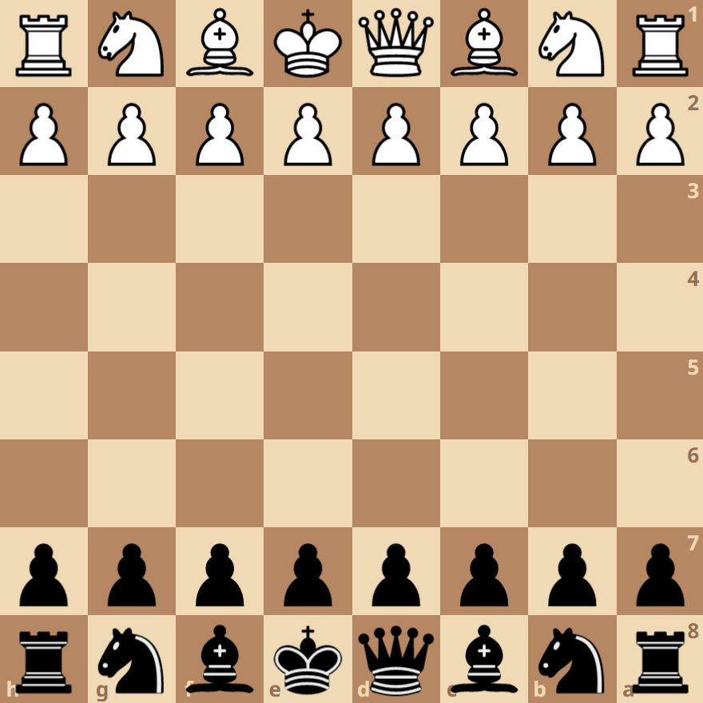

Knights' Tango
Also known as The Black Knights' Tango, the Mexican Defense, Two Knights' Tango, and Kevitz-Trajkovic Defense

The Knights' Tango is an opening by black in response to the Queen's Gambit
Opening Moves
- d4 Nf6
- c4 Nc6
Possible Continuations
- Nf3
- Nc3
- d5